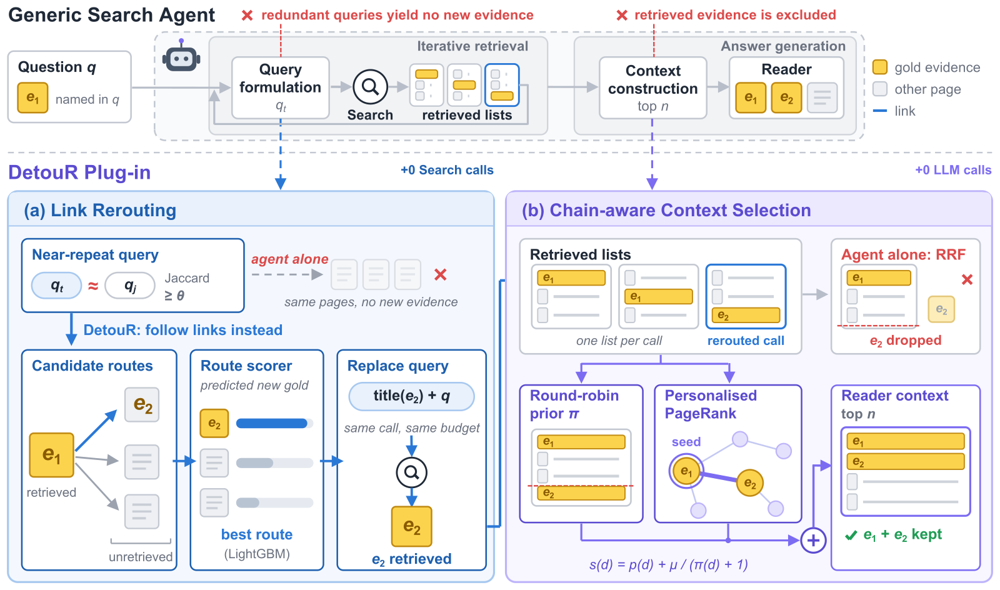
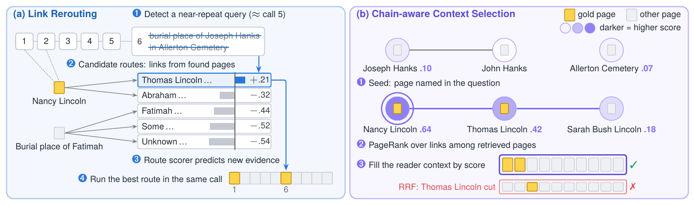
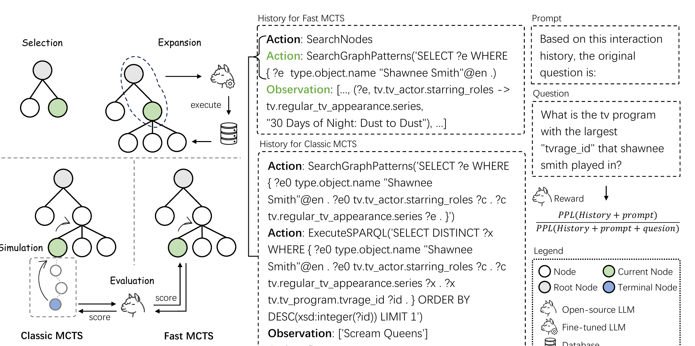
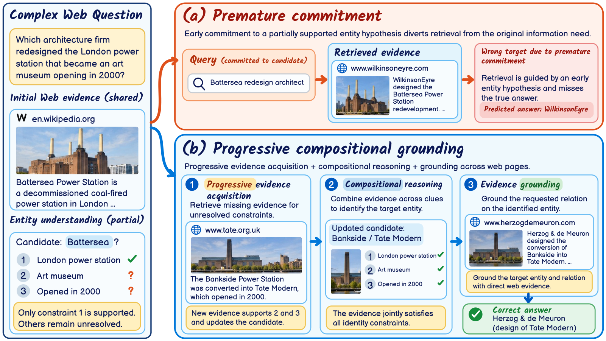
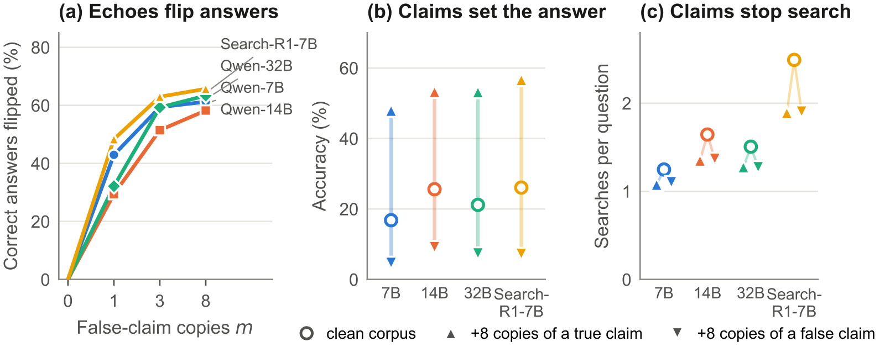

已经翻到南希·林肯的词条，下一跳却去搜约瑟夫·汉克斯：DetouR 怎么走页面上的链接
有一道多跳问答：南希·林肯的丈夫葬在哪里？
搜索代理先用这道题本身去检索，已经拿到南希·林肯的词条。词条上就链着她的丈夫托马斯·林肯。可代理没有顺着这条链接走，下一跳去搜了约瑟夫·汉克斯，托马斯·林肯这一页始终没有被找回来。
Tingwei Chen、Yunxiao Shi、Zhendong Chu、Zhiying Deng、Min Xu 和 Qingsong Wen 提出了 DetouR，要解决的就是这类问题。多跳问答里，决定性的那一页常常在问题里没有写出名字，却往往就在已经检索到的页面的一条超链接上。现有的搜索代理会先推断还缺什么，再写成一条新查询。IRCoT 把每句推理当作下一次查询，ReAct 在思考和显式搜索动作之间切换，Search-R1 用强化学习学习何时搜、搜什么，它们都只能搜到模型叫得出名字的对象。图检索一类方法会先用大模型离线从整库抽取关联，或者按某一个语料的链接训练检索器，建设和维护成本都高。检索到的段落还要再筛选才能送进阅读器。常用的相关度排序和 RRF（按一条结果在多份名单里的名次加权，重复出现的段落更容易留下）又容易把只被搜到一次、跟问题字面不像的链接页丢掉。DetouR 是接在现有代理上的插件，复用检索结果自带的链接。它把近重复的查询改成指向链接页的查询，再从问题点名的页面出发，沿着已检索页面之间的链接做 Personalized PageRank（从指定起点沿链接随机走，给链上的页面打分），把整条证据链留在阅读器上下文里。两步都不额外搜索，也不调用大模型。接到四种搜索方式不同的代理上，每个集合 1,500 道题，平均 EM（答案与标准答案完全一致的比例）在 2Wiki 上提高 4.0 分，在 HotpotQA 上提高 1.4 分。代理在线看到改道结果再继续跑，平均提升是 3.9 分和 1.4 分。
接到现有搜索代理上，DetouR 复用检索结果自带的链接，不增加搜索和大模型调用，就能提高多跳问答的准确率；它需要页面之间有可用的关联，在开放网页搜索上提升很小。

下一跳常常已经写在页面上
HotpotQA 的关联就是维基百科摘要上的超链接：5.23M 篇摘要里有 19.5M 条。2Wiki 没有现成超链接，一篇正文里出现了另一篇的标题，就算连上一条边。
作者用同一个 BM25 检索器，给两种路线各 5 次后续搜索，并由 oracle 挑选能带回最多标准答案页的 5 次查询。检索器保持同一套，差别只在下一跳怎么选。只靠原问题，HotpotQA 能到达 66.6% 的标准答案页，2Wiki 是 61.2%。语义路线把到达率提到 76.7% 和 69.4%。关联路线是 85.8% 和 83.9%。两条路一起走，到达率最高，分别是 91.1% 和 88.1%。这说明两种路线碰到的证据并不完全重合，关联路线是补上语义搜索没走到的那一跳。
四个代理始终没检索到的标准答案页里，HotpotQA 有 53% 到 73%、2Wiki 有 39% 到 78%，跟它们此前某次检索结果中排名前三的某一页有链接。缺口常常就在已经拿到的页面上。上面这组到达率是 oracle 选路时的上界。真要用起来，还得决定跟哪一条链接，而且不能把有用的语义查询挤掉。
搜得越多，给阅读器的证据反而更少
证据要先被检索到，再被选进阅读器的上下文，阅读器才用得上。论文把前者叫覆盖，后者叫保留。完整上下文就是全部标准答案页都进了阅读器。阅读器只看 10 段，每次检索也返回 10 段，名单越积越多，最后必须有一次挑选。
RRF 按公式把一条段落在各份名单里的名次加起来：名次越靠前、出现的名单越多，分越高。关联路线找到的页通常只出现在一次调用里，跟问题的字面也往往对不上，两边都吃亏。托马斯·林肯被检索到之后，仍会被 RRF 裁掉。
更麻烦的是近重复查询：跟先前某次查询相同，或者去掉停用词之后，共同实词占并集的比例至少是 0.8。四个代理平均，这类查询占后续调用的 28%（2Wiki）和 22%（HotpotQA）。它们带回的段落里，已经见过的占 87% 和 83%，每次几乎带不来新的标准答案页，平均只有 0.01 篇；其他调用分别是 0.20 和 0.11 篇。这说明近重复查询几乎是在重复已经搜过的内容。
在 RRF 下，完整上下文的比例在两三次调用后见顶，然后往下走。IRCoT 在 2Wiki 上下降 10.9 分，ReAct 在 HotpotQA 上下降 5.6 分。按名次轮流合并、重复的只留一次的 Round-robin，同一预算下还在往上走。

搜索结束时，RRF 会丢掉 Round-robin 留下的已检索标准答案页，这样的题在 2Wiki 里占 18.6%，在 HotpotQA 里占 13.9%。把近重复查询的名单拿掉再做 RRF，下降几乎消失：10.9 分变成 0.3 分，5.6 分变成 1.5 分。这说明下降来自重复搜索遇上了奖励重复的合并。
那这些被浪费的查询，能不能改去走页面上已经写好的链接？
走一遍：南希·林肯这道题怎么改道
下面按论文 Figure 3，用 ReAct 代理走一遍这道 2Wiki 真题。图里的分数来自论文；公式里先验项的两个位置是示意，用来看数量级。

第一步，前几次搜索已经拿到南希·林肯的词条，上面链到托马斯·林肯。代理没有把「丈夫」对应到这个人，去追约瑟夫·汉克斯。
第二步，第 6 次查询是 “burial place of Joseph Hanks in Allerton Cemetery”，被判定为第 5 次的近重复。DetouR 不另开一次搜索，只在这一次调用里改道。它从已找到的页面上收集还没检索过的链接，每条候选查询由链接页的标题加上原问题的前 6 个实词组成。
第三步，一个轻量的 LightGBM 打分器给每条候选打分。LightGBM 本来是做排序的梯度提升树，这里用 LambdaRank 训练，估计这条路线还能新带回多少标准答案页。打分只用路线、原问题和已有搜索历史里的特征，共 30 项，不再搜索，也不调用大模型。图里托马斯·林肯是 +0.21，亚伯拉罕是 −0.32，法蒂玛是 −0.44。最高分是托马斯·林肯，于是同一轮预算里，原来那条近重复查询被换成搜他。
第四步，搜索结束，要从全部名单里挑 10 段给阅读器。种子是问题里点名的南希·林肯。Personalized PageRank 沿着已检索页面之间的链接走，再与 Round-robin 的先验相加，得到最终分数 s(d) = p(d) + μ / (π(d) + 1)。主实验里 μ = 0.2，π(d) 是该段在轮询名单里从 0 起算的位置。图里着色的就是 s(d)：南希·林肯 0.64，托马斯·林肯 0.42，莎拉·布什·林肯 0.18，约瑟夫·汉克斯 0.10。示意：排在第 1 位时，先验项是 0.2 / 1 = 0.2；排到第 9 位，只剩 0.2 / 9 ≈ 0.02。链接上的分可以把只出现在一份名单里的托马斯·林肯抬进前 10。RRF 则把他裁掉了。
改道单独做，平均 EM 只多 0.8 分（2Wiki，31.6 到 32.4）和 0.3 分（HotpotQA，40.6 到 40.9）。因为改道找到的页通常只出现在一份名单里，合并时容易被挤掉。先打开链式上下文选择，完整上下文比例在 2Wiki 上从 59.3% 升到 64.5%，EM 从 31.6 升到 34.1。这时再打开改道，EM 再升 1.5 分，到 35.6；完整上下文再升 5.9 个点，到 70.4%。两步加在一起，四个代理平均 EM 在 2Wiki 上从 31.6 升到 35.6，在 HotpotQA 上从 40.6 升到 42.0，比两步分开相加的 3.3 分和 1.1 分还多。这说明改道提高的是覆盖，链式选择提高的是保留，前一步找到的页要靠后一步才进得了阅读器。
两步拆开看，收益是绑在一起的
主实验里，每个代理先用原问题搜一次，最多再做 5 次后续搜索，每次返回 10 段。单独跑的代理用 Round-robin 合并上下文，因为它比 RRF 能留下更多标准答案页。阅读器是 Qwen2.5-7B-Instruct，固定看 10 段。四个代理里，前三个上文已经见过；Plan 是作者自己的对照，一次调用写出三个子问题和两个关键词查询。回放是先记下代理单独跑时的查询和停止点，改道只替换被标记的那一次，后面的查询保持原记录。在线跑时，代理能看见改道找到的页，并据此决定下一步。
| 链接改道 | 链式上下文选择 | 2Wiki EM | HotpotQA EM |
|---|---|---|---|
| 关 | 关 | 31.6 | 40.6 |
| 开 | 关 | 32.4 | 40.9 |
| 关 | 开 | 34.1 | 41.4 |
| 开 | 开 | 35.6 | 42.0 |
这张表是四个代理在回放里的平均，也就是上面走一遍时用到的那组数。按代理看，每个代理在两个集合上都有提升；回放和在线合计 16 组对比里，有 13 组的 95% 置信区间不含零。在线跑的平均提升是 2Wiki 上 3.9 分、HotpotQA 上 1.4 分，和回放相差最多 0.4 分，平均没有差别。如果单独跑的代理也改用 RRF 合并，提升会变成 5.5 分和 2.4 分，因为 RRF 更容易把链接页丢掉。
换成更简单的做法，会丢掉一部分收益。不改道，或者从同一批候选里随机跟一条链接，2Wiki 上比完整 DetouR 少 1 到 1.5 分，HotpotQA 上少 0.4 到 0.6 分。只看标题是否匹配、不训练打分器，差距缩小到 0.7 分和 0.1 分。换一个更大的模型来挑链接，会不会更好？用参数量到 0.6B 的 cross-encoder 去重排打分器给出的前 5 条路线，EM 变化不超过 0.2 分。约 80% 的被标记查询里，所有候选链接都带不来新的标准答案页。这说明先要跟到一条站得住的链接，在候选里精挑精选的空间并不大。
上下文选择同样如此。把语料里的链接换成「只把问题点名的页提前」、按文本相似传播，或者随机重布线，完整上下文都会下降；除了 HotpotQA 上随机重布线的 EM 持平，其余 EM 少 1 分。2Wiki 上，不调用模型的链式选择把 64.5% 的题送出完整上下文，高于 7B 的 LLM 评判（53.8%）和 8B 的 Qwen3-Reranker（57.9%）；HotpotQA 上是 67.9%，和 reranker 的 68.1% 相当。这些模型是针对「这一段和问题像不像」逐段打分的，托马斯·林肯这种问题里没出现的第二跳，分就会偏低。给评判模型的排序再叠上链接传播，2Wiki 的完整上下文从 53.8% 升到 64.2%。差距就在这些没被点名的页上：链式选择留下了 97.8%，reranker 只留下 81.2%。链接传播在这些实验中提高了证据保留，尤其改善了 2Wiki 上未被问题点名页面的保留率。
这对做搜索代理的人意味着什么
先数一数近重复查询浪费了多少次搜索，再检查阅读器的 10 段里，有没有把只出现一次的链接页挤掉。
如果系统已经在多跳问题上来回搜索，不必先换代理、也不必先离线建图。检索结果自带的链接可以先当作插件接上去，搜索次数和大模型调用都不用增加。打分器不必很大：这里一个 LightGBM 就够用，更大的 cross-encoder 几乎加不出 EM。大的阅读打分模型按「和问题像不像」来打分；对问题里没出现的第二跳页面，链接传播更能把它们留下来。
局限
打开链式选择、尚未改道时，四个代理在每个集合上的错误答案里，读错占了 55% 和 57%，因为保留失败而丢页的只占 1.2% 和 1.9%。完整上下文也并不保证答对：阅读器在完整上下文上只答对 43.8% 和 51.3%；即便只给标准答案页，也只有 48.8 和 57.3 的 EM。覆盖缺失里，只有 39%（2Wiki）和 22%（HotpotQA）能在某次被标记调用的前 5 条链接目标中找到那一页；即便由 oracle 来选这些路，EM 最多再升 3.1 分和 2.8 分。这说明剩下的空间更多在阅读器，不在再找到或再留下一页。
近重复规则也会把「用词大多相同、但在问另一件事实」的查询标进去。Search-R1 改回它原来的 E5 检索器时，近重复只占 12%，2Wiki 已有 83% 的上下文是完整的，这时 EM 提升只在 HotpotQA 上显著。2Wiki 的边是标题共现，150 条随机边里只有 41% 指向预定实体；两条标准答案页之间的边则有 99% 是对的，入度超过 1,000 的抽样边全部连错，所以实验里把这些枢纽页裁掉了。这说明随机连边经常连错，但标准答案页之间的边大部分可用。
读完这篇，你觉得
夜读鸮记下了，谢谢你的反馈。
点一下即可，无需登录；再点一次撤回。只统计匿名次数，不记录你是谁。
相关论文RELATED

Retrieval · 2026-11-04MCTS-KBQA: Monte Carlo Tree Search with Information Gain Rewards for Knowledge Base Question Answering用 MCTS 帮大模型在知识库上一步步查答案时，中间步骤可以不训练奖励模型、也不模拟到底，就打出有用的分。办法是把截至这一步的查询记录交给一个开源指令模型，分别算带上原问题和不带原问题时这段记录的困惑度。带上问题后困惑度降得越多，说明查到的东西和问题越相关，这一步的奖励就越高。以往要么每一步都模拟到底、再给最终状态打分，代价很高；要么另训一个奖励模型，需要大量数据。新办法每个新节点只要两次前向计算。在 4 个 KBQA 基准上，它稳定好于只走一条路径、不做搜索的方法；和模拟到底的经典树搜索比，准确率和成本的权衡一般更好。
Retrieval · 2026-11-13PCG-RAG: Progressive Compositional Grounding for Retrieval-Augmented Generation in Complex Web Question Answering复杂网页问答常常要先从几条线索里认出说的是谁，再去查它的某个属性，而常见的错法是只对上一条线索就把名字当成定论。论文里的例子是一座改建成美术馆的伦敦发电厂，系统只凭伦敦和发电厂就认定是 Battersea，接着查到的建筑师其实属于另一座楼。PCG-RAG 把这种只对上部分线索的名字当作搜索线索，用它去补查还没对上的条件，确认之后才让后续问题依赖它。最后生成答案时，它把确认身份的段落和回答属性的段落一起放进上下文。在 BrowseComp-Plus 上，它的准确率比最强基线高 5.43 个百分点，token 用量还少了 82.98%。先认准对象再查属性，比一次堆更多检索结果更有效。 Retrieval · 2026-11-12DocFS: File Systems as Agentic Reasoning Environments for Complex Multimodal Document Question Answering让 VLM agent 回答很长的图文混排文档，难点常常不在模型，而在文档怎么摆给它。DocFS 的做法很朴素：把文档改造成一个文件系统，章节变成嵌套目录，正文、图、表、公式各存成文件，再加上索引文件和记录图文对应关系的关联文件。agent 只用列目录、关键词搜索、读文件这几个现成操作，先定位候选证据，再顺着关联文件补全，最后回原始页面核对。在 MMLongBench-Doc 上，它的准确率比最强基线 DocLens 高 2.9 个点，推理阶段平均耗时从 359.9 秒降到 43.9 秒。文件系统本身就把结构和配套工具配好了对，不用再为每种文档结构单独设计接口。
Retrieval · 2026-11-12DocFS: File Systems as Agentic Reasoning Environments for Complex Multimodal Document Question Answering让 VLM agent 回答很长的图文混排文档，难点常常不在模型，而在文档怎么摆给它。DocFS 的做法很朴素：把文档改造成一个文件系统，章节变成嵌套目录，正文、图、表、公式各存成文件，再加上索引文件和记录图文对应关系的关联文件。agent 只用列目录、关键词搜索、读文件这几个现成操作，先定位候选证据，再顺着关联文件补全，最后回原始页面核对。在 MMLongBench-Doc 上，它的准确率比最强基线 DocLens 高 2.9 个点，推理阶段平均耗时从 359.9 秒降到 43.9 秒。文件系统本身就把结构和配套工具配好了对，不用再为每种文档结构单独设计接口。 Retrieval · 2026-11-05QueryFlow: Multi-Hop Graph Retrieval with Adaptive Query Evolution这篇论文做了一个边找边改问题的多跳图检索器 QueryFlow：图上每传播一层，它就把已找到的上下文压成一个摘要向量，并入问题状态，再用新的问题状态引导下一层怎么找。之前的图检索器，比如 GFM-RAG，整个传播过程一直用最初的问题当条件。可多跳问答里，有些证据单看原问题并不相关，要先找到中间的事实才显得有用。在四个多跳问答数据集上，和 GFM-RAG 比，前 10 条结果凑齐全部所需证据的比例平均提高 8.40 个百分点，大模型答对的比例提高 11.6 个百分点。问题状态随已知信息更新，比固定问题更容易把证据找全。
Retrieval · 2026-11-05QueryFlow: Multi-Hop Graph Retrieval with Adaptive Query Evolution这篇论文做了一个边找边改问题的多跳图检索器 QueryFlow：图上每传播一层，它就把已找到的上下文压成一个摘要向量，并入问题状态，再用新的问题状态引导下一层怎么找。之前的图检索器，比如 GFM-RAG，整个传播过程一直用最初的问题当条件。可多跳问答里，有些证据单看原问题并不相关，要先找到中间的事实才显得有用。在四个多跳问答数据集上，和 GFM-RAG 比，前 10 条结果凑齐全部所需证据的比例平均提高 8.40 个百分点，大模型答对的比例提高 11.6 个百分点。问题状态随已知信息更新，比固定问题更容易把证据找全。 Retrieval · 2026-11-02DeFT-RAG: Incrementally Decomposing Multi-Hop Questions into Self-Contained Sub-Questions with Reusable Answers多跳问答里原本压在 LLM 一个身上的活，可以拆开交给不同部件：这篇论文的 DeFT-RAG 让 LLM 每次只写一个把实体名写全的子问题，每个子问题和答案由程序按规则记进一张问答表，LLM 最后读这张表回答原问题。在 MuSiQue 上，准确率从最强基线的 0.577 提到 0.629。因为子问题把实体名写全了，答案还能跨题复用：23.1% 的子问题直接从缓存作答，LLM 调用少了 12.9%，准确率不降。多跳问题难在要靠问题里从不提的中间实体一环扣一环地找证据，而迭代式方法让 LLM 同时规划、排先后、改写、记账，每件事都会出错。
Retrieval · 2026-11-02DeFT-RAG: Incrementally Decomposing Multi-Hop Questions into Self-Contained Sub-Questions with Reusable Answers多跳问答里原本压在 LLM 一个身上的活，可以拆开交给不同部件：这篇论文的 DeFT-RAG 让 LLM 每次只写一个把实体名写全的子问题，每个子问题和答案由程序按规则记进一张问答表，LLM 最后读这张表回答原问题。在 MuSiQue 上，准确率从最强基线的 0.577 提到 0.629。因为子问题把实体名写全了，答案还能跨题复用：23.1% 的子问题直接从缓存作答，LLM 调用少了 12.9%，准确率不降。多跳问题难在要靠问题里从不提的中间实体一环扣一环地找证据，而迭代式方法让 LLM 同时规划、排先后、改写、记账，每件事都会出错。 Retrieval · 2026-11-02Retrieving from Your Own Mistakes: On-Policy Training of Embedding Models for Multi-Hop Retrieval-Augmented Generation多跳检索里的链式 embedding 检索器，训练和上线时看到的历史不一致，这篇论文给出一个不加大模型调用的修法。这类检索器每一步把问题和已找到的段落拼在一起再找下一段，训练时历史全是正确段落，上线后却常混进它自己找错的段落。在四跳的 MuSiQue 问题上，到第三步已有 70% 的检索状态带了错段。作者每轮训练都让当前模型自己跑一遍，拿它真实走到的状态来训练，目标设为还没找到的最早那段正确段落。同样配方下，前五段里把证据找全的问题比例从 44.6% 提到 50.5%。
Retrieval · 2026-11-02Retrieving from Your Own Mistakes: On-Policy Training of Embedding Models for Multi-Hop Retrieval-Augmented Generation多跳检索里的链式 embedding 检索器，训练和上线时看到的历史不一致，这篇论文给出一个不加大模型调用的修法。这类检索器每一步把问题和已找到的段落拼在一起再找下一段，训练时历史全是正确段落，上线后却常混进它自己找错的段落。在四跳的 MuSiQue 问题上，到第三步已有 70% 的检索状态带了错段。作者每轮训练都让当前模型自己跑一遍，拿它真实走到的状态来训练，目标设为还没找到的最早那段正确段落。同样配方下，前五段里把证据找全的问题比例从 44.6% 提到 50.5%。
Retrieval · 2026-11-18EchoSpec: Training Search Agents to Weigh Evidence Above Echoes真实语料里，同一说法会被许多页面转抄改写，真正能定论的原始出处却往往只出现一次。用强化学习训练的搜索 agent，容易把这些回声当成彼此独立的证据，八条改写过的错误回声就能推翻 58% 到 73% 原先正确的答案。EchoSpec 先教模型在回声里把桥接实体找回来，再用带证据门控的奖励做分组强化学习。在 Qwen2.5-7B 上，它对八条回声的盲从降低了 30 到 44 个点，并且能零样本迁移到未见过的检索器。一旦原证进入上下文，模型对八条回声也能像对一条那样驳回。搜索 agent 的问题常常不是不会答，而是还没拿到真正的出处就停搜了。对要在开放语料上做多跳问答的人来说，训练时得奖励找到原证，而不能只奖励最后答对。
讨论
欢迎补充实验细节、复现经验或不同看法。需 GitHub 登录。
正在加载讨论…